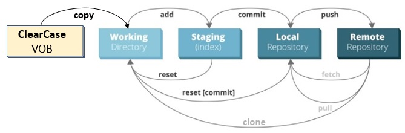
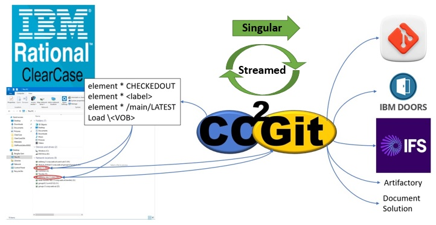
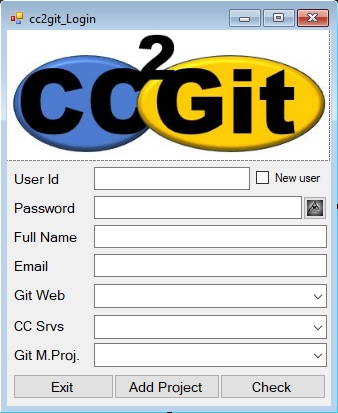
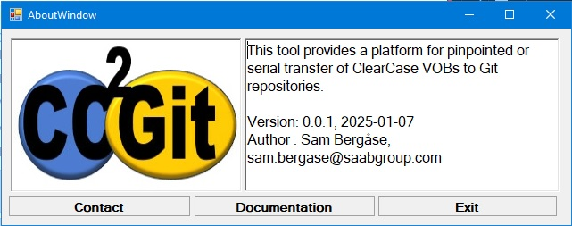
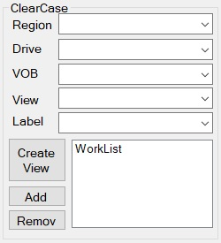
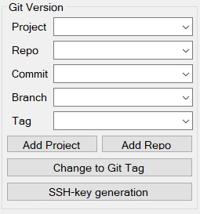
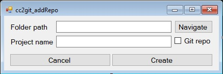
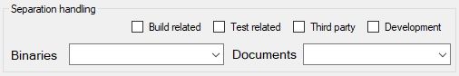
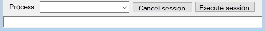

ClearCase2Git Tutorial
Introduction
This tool was created from the insight that changing from ClearCase to Git would take an immense time if it was done manually.
SAAB AB has used ClearCase as a version handling tool for project related source code and other data for 20-30 years.
The sheer amount of data stored in ClearCase are daunting and the task of moving everything manually to Git and other tools is mindboggling.
So, a tool for automated, or semi-automated, transfer of the project data was created.
Along the way during development a number of "nice-to-have" functionality were discovered and requested.
This page shall describe the functionality in the tool and how to use it.
Prerequisite
In order to use the ClearCase2Git tool the user needs to be somewhat familiar with Git, ClearCase, and any other target tools for the ClearCase content.
To support a user that is not familiar with Git and/or ClearCase there are very brief description of the fundamentals of the tools in
"The ClearCase Tool" and "The Git Tool" along with "The work process", below.
Basic requirement in order for ClearCase2Git to work are:
- Connection to the source ClearCase server.
- Existing dynamic views with mapped drives.
- Connection to the target Git server.
- Connection to any target environment for separated data.
Lacking any of the requirement above will inhibit that part of the program.
ClearCase is a software configuration management tool used for version control.
It was initiaially released by Atria Software in 1992 but has since been consolidated into the Rational and IBM sphere.
The tool supports the operative platforms AIX, HP-UX, Linux, Solaris, and Windows. The version handling is based on a multi-version file system,
meaning that each file and folder in a structure may consist in multiple versions. The multiversion files can be branched for development and
branches can be merged or kept separate.
In ClearCase each file or directory is version handled separately and identified through views. A view pinpoints what version of the file or directory
that should be visible. A view may pinpoint a development step of a certain file, a labeled set of files, or latest in any separate branch.
Depending on the CM strategy either the labels or a view is significant for pinpointing a delivery.
Git is a DevOps tool used for source code management. It was initially released by Linus Torvalds in 2005. There are a number of useable interfaces
to Git, interfaces such as GitLab or Bitbucket, but the base functionality is located in the Git software.
The tool supports Linux, macOS, Solaris, AIX, and Windows. The tool is a distributed version control system, that means that the user essentially copies
a complete file system to his/her own work area where he/she works on the code before adding, committing, and pushing the changes to a remote repository.
In Git the "commits" are version controlled, labelled, and possibly tagged. A single file is never labelled or tagged.
The ClearCase2Git tool is designed to transfer the selected VOB files based on a set view or label, either as a single transfer or as a streamed transfer.
Transferring the data is done following the Git work strategy, with the addition that the files are fetched from a ClearCase.

What files to fetch from ClearCase are identified by the user within the ClearCase2Git tool. Also, how far to transfer the files, within the tranfer chain
depicted above, are defined by the user. As is eventual separation of different data types, and when possible, where to store them. Depending on the users
selection the transfer is singular or streamed, for instance there is no use in streaming a simple copy since they would overwrite the previous transfer.
The view used in ClearCase to pick out what files to transfer is changed according to user selection, and altered with each iteration if a streamed
transfer is selected.

The different program parts are:
Each of these program parts, and their sup-parts, are discribed below.
Because the tool connects to ClearCase and Git it needs the user's credentials for the interface. It also needs the Git Website and ClearCase server
to be set. Setting the Git master project to work with is optional but existing Git master projects are neccessary. These data are stored in the
user's datafile that is fetched when the user enters id and password.
The user interface for this stage is shown below.

The "User Id" text box shall contain the user's corporate identity. If a user identity that is not previously entered into the program is given
the "New user" bullet box will be selected, the rest of the data input will be set to receive data, and the right-hand button on the bottom row
will be set to "Create". If a previously entered user id is given the "New user" bullet box will change text to "Edit user", selecting this box
will set the rest of the data input to receive data and the right-hand button on the bottom row to "Save Data".
The "Password" text box shall contain the user's password that is used in Git and ClearCase. Viewing and hiding the entered password can be toggled
using the "all seeing eye" button on the right.
The "Full Name" text box shall contain the user's name and the "Email" text box shall contain the user's corporate email.
The "Git Web" information area can be a combo box or a text box, the combo box is used to select an existing Git web from the list or to select
the "Add Git Web..."-option. Selecting the "Add Git Web..."-option will change the "Git Web" information area to contain a text box where the
new Git web root path can be entered. Entering a singular symbol into the text box will activate the middle button on the bottom row buttom that
then will read "Add Git Web".
The "CC Srvs" information area can be a combo box or a text box, the combo box is used to select an existing ClearCase server from the list
or to select the "Add CC Server..."-option. Selecting the "Add CC Server..."-option will change the "CC Srvs" information area to contain a
text box where the new ClearCase server identity can be entered. Entering a singular symbol into the text box will activate the middle button
on the bottom row buttom that then will read "Add Server".
The "Git M.Proj." information area can be a combo box or a text box, the combo box is used to select an existing Git master project from the
list or to select the "Add Project..."-option. Selecting the "Add Project..."-option will change the "Git M.Proj." information area to contain
a text box where the new Git master project can be entered. Entering a singular symbol into the text box will activate the middle button on the
bottom row that then will read "Add Project".
The "Exit" button will close the window with the user unverified.
The middle button on the bottom row is used to edit "Git Web"-, "CC Srvs", and "Git M.Proj."-data, the text will change depending on what data
is being edited. The button text will contain a "Add" or "Remove" combined with the edited data.
The right-hand button on the bottom row is used to check, create, or save the entered user data along with log in when correct data has been
entered and selected.
Main window
The main window is divided into five areas, "top menu", "ClearCase settings", "Git settings", "Separation handling", and "Process handling".
The different interfaces will be activated when it is appropriate to set or enter data into them. A non-active interface is lacking essential data
from a previous step.
Each area is described in detail in the following chapters.
Top menu
The top menu contains four different areas, "File", "ClearCase", "Git related", and "Help".
"File" menu contains the normal Open-, Save-, and Close-session selections that works as in any standard tool. Each of these selections has a
short command connected to them.
The ClearCase menu presents the possible ClearCase versions for this tool. Selecting the correct version sets specific parameters for that
version and enables the "ClearCase Settings" area.
The Git Related menu presents a sub-menu with possible Git versions for this tool. Selecting the correct version sets specific parameters for
that version and enables the "Git Settings" area.
A Web interface sub-menu is inactivated since the tool does not really work with
web interface tools but directly with Git.
A transfer protocol sub-menu enables the selection between using SSH or HTML as the protocol
for transferring files to or from the remote repository. The support functions used within the program does not yet support SSH, thus HTML is
set as default and should be the used protocol.
The help menu contains "Documentation" and "About".
Selecting the "Documentation" option starts this web page.
Selecting the "About" option
opens an about window as the one presented below.

The about window presents a very brief introduction to the tool, what version is active and who made it, along with email to the author.
The three
buttons on the bottom row are "Contact", "Documentation", and "Exit".
"Contact" starts an email conversation with the author if the current
environment has an email server connection.
"Documentation" starts this presentation.
"Exit" closes the window.
ClearCase settings area
The "ClearCase settings" area handles necessary settings for ClearCase.

The "Region" combo box requires the user select if the ClearCase operative environment is Windows or Linux.
Currently only Windows operative
environment is operative in this tool and other environment may be added since ClearCase supports more environments.
The "Drive" combo box requires the user to pinpoint the mapped drive that is used for the dynamic ClearCase view that is to be
used for transfer.
The "VOB" combo box requires the user to select the project level VOB that contains the source data.
The "View" and "Label" combo boxes are activated simultaneously. "View" contains the existing views in the selected drive and "Label" contains the
existing labels in the selected VOB. These are used to select methods for identifying what data is to be transferred from the selected VOB. In some
projects the CM handling is based on "delivery views" and in other it is based on labelling. This makes it necessary to allow selecting both views
and labels for entering into the work list. If a view is selected the name may need to be changed in order to provide for a understaneable commit
comment later.
The first button on the left may contain the text "Create View" or "Edit View", depending on if a view is selected or
not.
Currently there is no functionality behind this button.
The middle button may contain the text "Add View" or "Add Label"
depending on what is selected. Pressing the button adds the selected view or label to the work list.
The bottom button on the left-hand
side is only activated if a view or label is selected in the work list, clicking it will remove the selected work list item.
The Work list text box contains the selected views or labels to be used for transfer data. Selecting only one view or label allows only for a
singular transfer of data from one development increment, selecting multiple views and/or labels allows for streamed transfer if no Tag is
selected in the "Git Version settings" area later.
Git Version Settings area
The "Git Version Settings" area handles necessary settings for the target Git tool.

The "Project" combo box should contain the Git master projects from the login window, if a project was selected during log in it should be
selected here.
The "Repo" combo box shall contain all directories that exists in the users work area located at:
C:/Users/
'user-id'/source/repos
or
H:/source/repos
The identified directories are "tagged" '(G)' for Git repo or '(N)' for
normal directory.
The "Commit" combo box contains all existing commits in the selected target repo.
The "Branch" comto box
contains all existing branches in the selected target repo.
The "Tag" combo box contains the labels or views from the work list to be
used for data selection. If a view is selected it needs to be changed into a meaningfull commit phrase using the "Change to Git Tag" button.
The "Add Project" button is used to add Git main projects to the Git server if they are missing.
Currently there is no functionality
behind this button.
The "Add Repo" button starts a window for adding a directory or a repository to the user's work area.

The "Change to Git Tag" button activates a text box over the Tag combo box and allows the user to change the phrase used for commit into a
meaningfull phrase. This is often not necessary when a label is selected.
The "SSH-key generation" button is only active if the user
does not have a ".ssh" directory in his/her home directory. Clicking the button generates a SSH-key pair for the user.
Separation handling area
The "Separation Handling" area is used to select eventual data separation from the source data.

It is possible to separate:
Currently there is only a function to store these separated files in a separate directory, depending on the area of separation. If a separated
file allready exists on the target directory for the area the file name will be incremented with one to separate the files.
Build related
Build related aims for separating build scripts or configuration files used for building the end resulting binary executables. After a transfer
these files will need to be altered to work in the new environment.
Test related
Test related separation aims to pinpoint the test-scripts used for testing and verifying the product. Both files stored under any directory containing
"test" or "Jenkins" along with ".scr" files are selected here.
Third Party related
This separation selection aims to separate third party code and binaries from the transfer data.
This group may need further identifyer
to pick out specific third party data, currently it merely handles "dy4", "tornado_211", and "buster".
Development related
This separation handling aims to separate development related tools. Currently the separation merely picks out data contained in a directory
containing the "tools" phrase.
Binary Executables
Separation of binary executables aims to pick out the deliverable binary files from the source data. Currently the separation function targets
"exe", "com", "inf", "ipa", "osx", "pif", "run", "wsh" files for separation. During a transfer these files should be stored in other version
handling tools than Git, currently the target tools for binary executables are Artifactory or IFS.
Documents
Separation of documentation aims to pick out the product documentation of the source project. These files shall in a new environment be stored in
other version handling tools for documentation. Currently the target tools are Document sollution, DOORS, or IFS.
The targeted files has
file suffix "pdf", "doc", "docx", "xml", "odt", "html", "htm", "xls", "xlsx", "txt", or "csv".
Process Handling area
The "Process Handling" area is used to control the transfer process execution.

The "Process" combo box contains the selectable execution variants depending on user settings.
The "Cancel session" button saves session data and closes the session.
The "Execute session" executes the selected process.
The bottom row text box presents program status and events during execution of the program.
Work process
This section describes the normal work process for converting VOB(s) to Repo(s).
Prerequisite:
If there is a repository in your local work area that has been used previously, and contains data, it is beneficial to delete the repo and
clone it from the remote repository again. This is done by:
- Open a file browser and navigate to your work area.
- Right click on the target reop you want to remove and select "Delete".
- Open your "Git Bash" interface and enter the clone command in format:
$ git clone ssh://"Git server":"id"/"path to repo" "work repo name"
Where:
"Git server" is your target server, for example "git@uxc005.corp.saab.se".
"id" is the numerical identity string, for example 2222.
(This can be found in your Git server web interface)
"path to repo" is the path to your Git repo within the server, for example "project/spk39/frans.git".
"work repo name" is the name your work repo should have.
it is important that it has the same name used in ClearCase, but with an initial capital letter.
Process:
- Start the ClearCase2Git tool.
- The log-in window ends up behind the main window, you need to click on the log-in window to set the focus on it.
- Enter your corporate id and your corp-password.
If you get confused or interrupted while entering the password you can use the "all-seeing-eye" button to toggle password masking.
- If this is your first time using the tool the "New user" bullet will become set and the data fields changes to receive information.
- Enter the required data in each interface box.
- The "Git Web", "CC Srvs", and "Git M.Proj." areas change between text- and combo-boxes making it possible to enter multiple selections.
Depending on which of these areas have been edited the middle button on the bottom row will alter the text on it.
That button is used to enter the written information in your user data.
- Click the "Check" button.
- The bullet next to your user id shall change text to "Edit user". This box can be set to allow editing your user data.
- Select the "Git web" that corresponds to your target Git server.
- A web server that is not online is indicated with parenthesis around the presented address.
- Selecting the "Add Git Web..." option allows for entering a new Git web server to your list. Selecting this option will set the
middle button on the bottom row to "Add Git Web" when something is entered in the text box.
- Selecting a Git Web path changes the middle button on the bottom row to contain "Remove Git". Clicking that button removes the
selected path from the list.
- Select the "CC Srvs" that corresponds to your source ClearCase server.
- A ClearCase server that is not online is indicated with parenthesis around the server name.
- Selecting the "Add server..." option allows for entering a new ClearCase server to your list. Selecting this option will set the
middle button on the bottom row to "Add CC" when something is entered in the text box.
- Selecting a ClearCase server changes the middle button on the bottom row to contain "Reove CC". Clicking that button removes
the selected ClearCase server from the list.
- It is optional to set the Git master project information at this stage.
- Selecting the "Add project..." option allows for entering a new Git master project to your list. Seleccting this option will set
the middle button on the bottom row to "Add Git M.Proj." when something is entered in the text box.
- Selecting a Git master project changes the middle button on the bottom row to contain "Remove Proj.". Clicking that button
removes the selected master projewct from the list.
- Click "Login".
- In the "Top menu" under the "ClearCase" menu, select your ClearCase version.
- In the now activated "Region" combo box, select your work operative region, i.e., "avi_win" or "avi_linux"*.
*Interface to a Linux operative is not implemented in this version of the tool.
- In the now activated "Drive" combo box, select the drive letter mapped to the dynamic ClearCase view used as source.
- In the now activated "VOB" combo box, select the sub VOB containing your source data.
- Either select a view or a label that identifies the files to be transferred.
The CM handling in some projects relies on delivery views and other projects relies on delivery labels. It is possible to mix views and labels in
a work session.
- Click on the now activated "Add" button to add the selected CM item to the work list.
- Repeat setp 13 and 14 until all views or labels to be used for identifying
transfer-files are added to the work list.
- You can remove a faulty added, or faulty placed, CM item from the work list by selecting it and clicking the "Remov" button.
- In the "Top menu" under the now activated "Git related"==>"Git" menu, select your Git version.
- Select the used transfer protocol.*
*Currently, use the "HTTPS" protocol since the support software cannot handle "SSH".
- Check that the now active "Project" combo bopx is set to the correct Git master project or change it to the correct one.
- In the now active "Repo" combo box, select the target repository in your work area.
Git repositories are indicated with a leading "(G)" while normal directories are indicated with a leading "(N)".
- If your work area is lacking the correct target repo it can be added using the "Add Repo" button. The added folder can be
a Git repo or a standard directory.
- If a standard directory is created, transfer to that directory is limited to "Copy to Folder" since there is no corresponding
Git information.
- If a Git repo is created, transfer to that directory is limited to at the most "Copy, Add, & Commit" since there is no
corresponding remote repository.
- In the now active "Branch" combo box, select the branch where your data should be committed to.
- In the now active "Tag" combo box, select the label or view to use for your transfer.
- Selecting a tag sets the transfer process to single transfer mode, transferring only one set of files indicated by the
selected view or label.
- NOT selecting a tag or a view sets the transfer process to streamed transfer mode, transferring the files indicated
by every view or label in the work list.
- If the selected view or label does not have the correct format for a commit comment in Git, this can be changed using the
"Change to Git Tag" button.
- If separation of specific data files should be done during the transfer this can be indicated by the bullet setting and target
selection in the "Separation handling" area.
Currently this merely copies the files to separate directories for later handling. Streamed
transfer with separation set causes the existence of multiple versions of the same file to be named with an incremented version number.
- Select the work process you want to perform. The available processes depend on previous selections.
- "Copy to Folder" copies the indicated files to the set target directory or repo. This is merely valid in single transfer mode.
- "Copy & Add" copies the indicated files to the target repo and adds them to the Git staging area. This is merely valid in the
single transfer mode.
- "Copy, Add, & Commit" copies the indicated files to the target repo, adds them to the Git staging area, and commits them to
the local repository.
- "Copy, Add, Commit, & Push" copies the indicated files to the target repo, adds them to the Git staging area, commits them to
the local repository, and pushes them to the remote repository.
- Click the "Execute session" button.